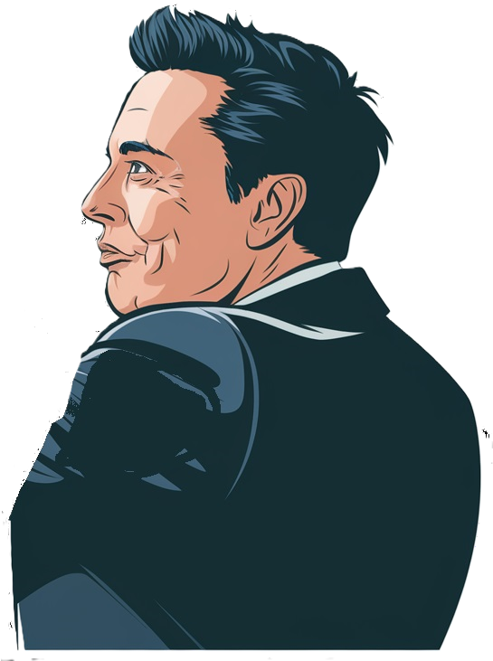

50.0%
Event
Likelihood a fascist would do it.
Likelihood a non-fascist would do it
Posterior (or likelihood it is Fascist): 50.0%



Not sure if what you’ve seen is something a fascist would do? Can’t trust your own eyes?
With this calculator, you can use Bayes’ Theorem to input a list of events, the likelihood a fascist would do them, and the likelihood a non-fascist would. Let the math guide your suspicions!